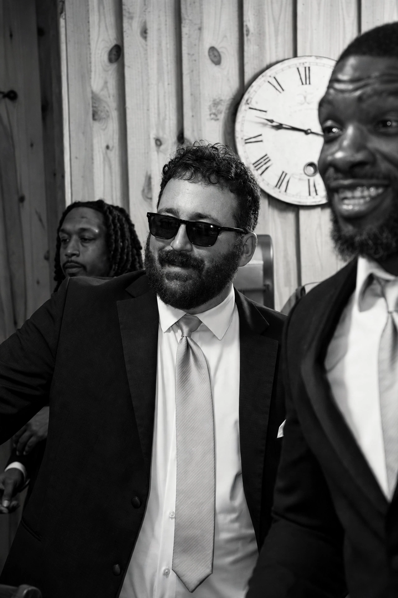

Practicing nihilist. Professional kindness.

Life doesn't come with meaning. That's the good news.
I'm a practicing nihilist. The phenomenon of life is, at its core, meaningless — no script, no scoreboard in the sky, nothing handed down. Most people hear that and flinch. I hear it as freedom: if meaning isn't given, then what I do with my days is entirely mine.
So my practice is kindness. Not because the universe rewards it — it doesn't notice. I do right by people because I choose to: fair prices, honest work, showing up when I say I will, leaving every yard, every deal, and every person better than I found them. Kindness isn't the meaning of life. It's what I build in the empty space where meaning was supposed to be.
No meaning given. All meaning made.
Lawn care, tree work, and property maintenance across Oklahoma City — dozens of regular customers on biweekly routes, plus seasonal work all year.
THE GOAL — Be the crew OKC trusts with their homes: honest prices, finished work, every time.
Full-service holiday lighting — measured, installed, and shining, paid up front and done right the first time.
THE GOAL — A season of roofs done on schedule, every house lit before its deadline.
Most small businesses in OKC still don't have a real website. I build them one — designed, written, and live — for a flat monthly rate a small business can actually afford.
THE GOAL — Get Oklahoma City's no-website businesses online, one honest site at a time.
I track Oklahoma City home sales and package fresh new-homeowner leads for the local businesses that serve them.
THE GOAL — Connect new neighbors with good local pros, fast — everybody wins.
Music I like, streaming right here — this is the player my playlists plug into.